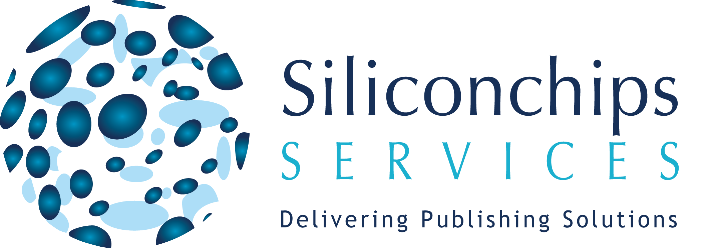

A Symposium on Janeway and Open Access Publishing.
Theme · Users & Community
May 21–22, 2026 · Dublin City University, Ireland

With thanks to our sponsors · #JanewayOA26
discord.gg/jkYPfj6q6N
Scan to join · questions in #panelsBreakout chats at lunch in the Tavern voice channel
Welcome to The Lower Decks 2.0 · #JanewayOA26
Full programme at thelowerdecks.janeway.systems
Two winners. Colour of your choice. Posted to you after the event.
Most spirited Discord contributor
Bring the energy · pet photos, reaction gifs, and good banter all count.
Best question-not-a-comment
For the sharpest, most thoughtful question put to a panel speaker.
Winners announced on Discord after Friday's keynote · #JanewayOA26